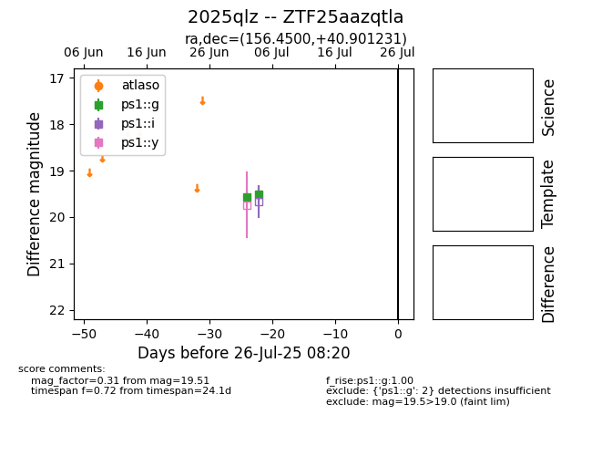

Target 2025qlz at 2025-07-26 08:20, see:
FINK: fink-portal.org/2025qlz
Lasair: lasair-ztf.lsst.ac.uk/objects/2025qlz
ALeRCE: alerce.online/object/2025qlz
TNS: wis-tns.org/object/2025qlz
YSE: ziggy.ucolick.org/yse/transient_detail/2025qlz
alt names
2025qlz (yse,tns)
ZTF25aazqtla (ztf,fink)
coordinates:
equatorial (ra, dec) = (156.4500,+40.90123)
galactic (l, b) = (178.6914,+57.13325)
photometry
last atlaso=nan, ps1::g=19.51
1 atlaso, 2 ps1::g detections
